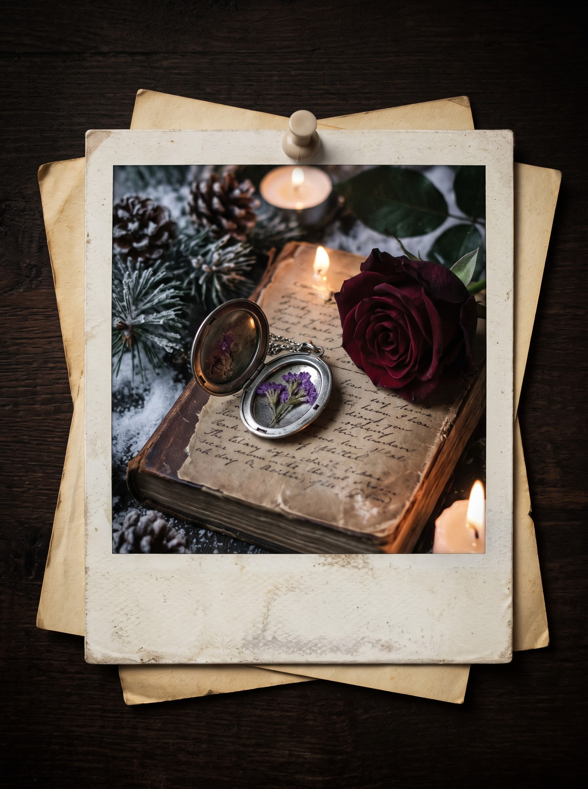
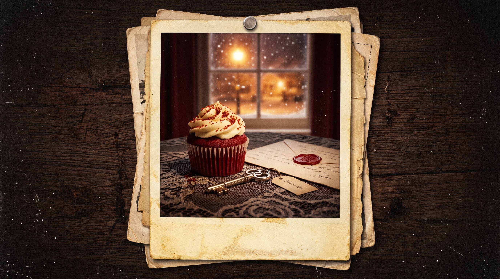
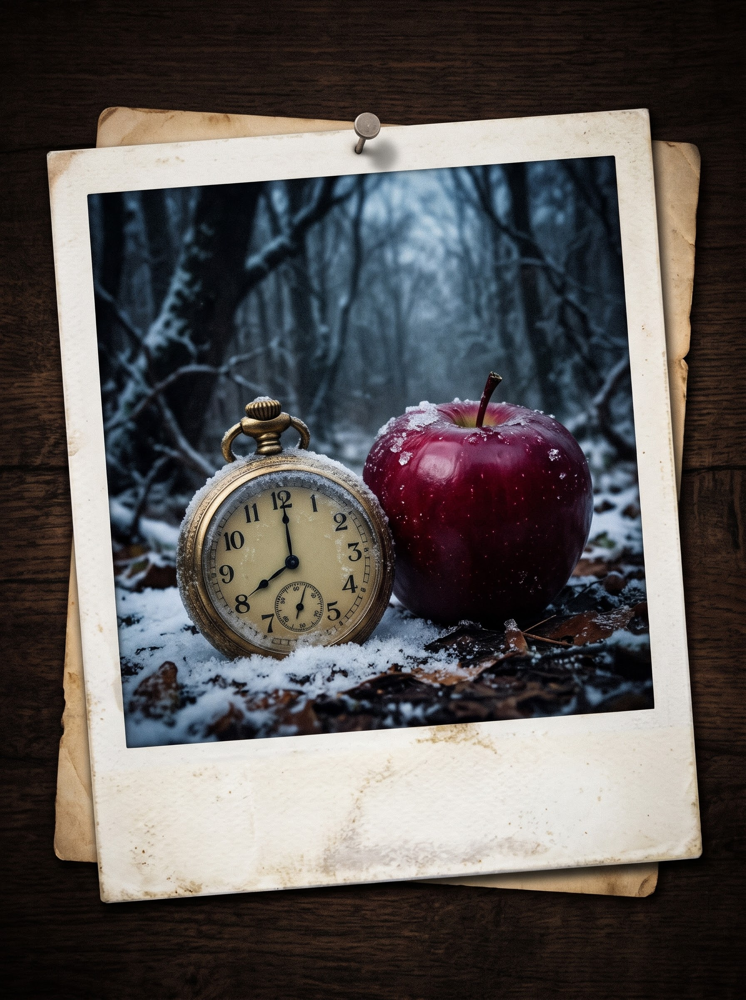

Прокачивай живой английский на реальных диалогах, интригах и драмах. Слушай естественное произношение, отмечай выученные слова, читай интерактивные новеллы и уходи от погони в режиме Crimson Pursuit.




Нажми на карточку проекта, чтобы сразу перейти к его 100 карточкам в словаре:
The Vampire Diaries — мистика, вечная любовь, проклятия и эмоциональные диалоги Мистик Фоллс.
Открыть лексику (100) →Desperate Housewives — ирония, скелеты в шкафу, сплетни и безупречный разговорный английский Вистерия Лейн.
Открыть лексику (100) →Supernatural — дорожный сленг братьев Винчестеров, охота на демонов, сарказм и американские идиомы.
Открыть лексику (100) →The Penthouse — лексика высшего общества, амбиции, месть, судебные интриги и борьба за власть во дворце Гера.
Открыть лексику (100) →Once Upon a Time — магия Сторибрука, сделки с Тёмным, древние проклятия и сказочные идиомы.
Открыть лексику (100) →Проверь знание слов, идиом и грамматики из любимых сериалов. После каждого ответа появится подробный разбор!
Выбери проект, чтобы разобрать культовые цитаты, грамматику и живой разговорный сленг:
Переключай атмосферу сайта под свое настроение:
Отмечай выполненные этапы обучения (всё автоматически сохраняется на устройстве):
Если хочешь обнулить выученные слова, результаты тестов и чек-лист: